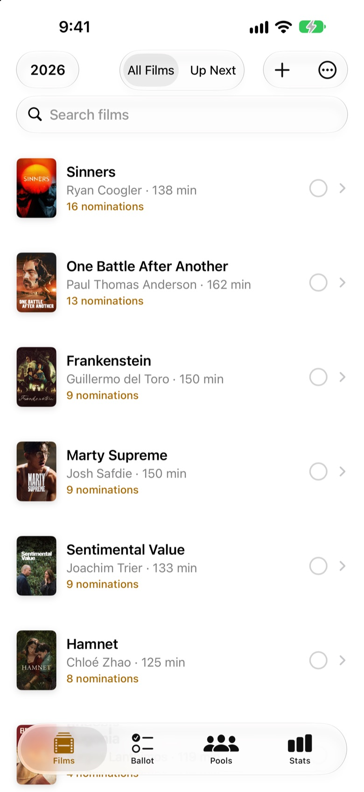
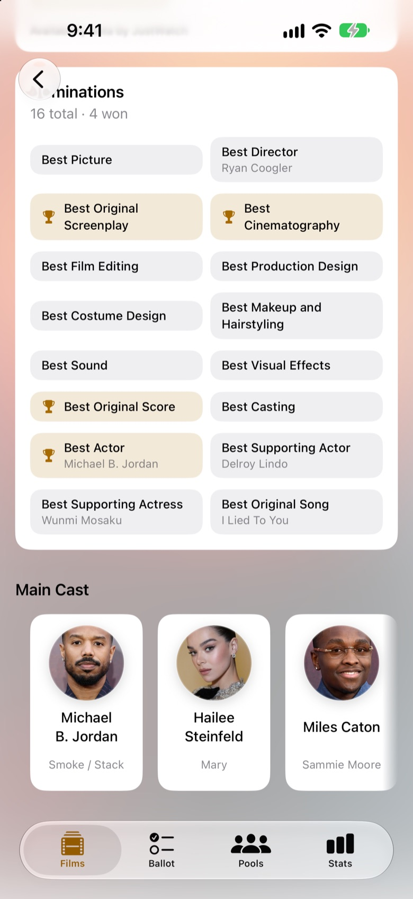

1 Before the nominations
Watch everything.
Start with the films you are already watching, then let the shortlists join them. Each film shows what it is up for, where to watch it and how much of the season you have covered.
- Rate in half stars and record the day you watched
- Add any film yourself. It keeps your rating if it is nominated
- Trailers, cast and where to stream, rent or buy
- Bring in your Letterboxd diary

